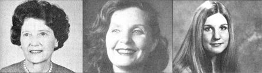

As far as the three women pictures here are concerned, home schooling runs in the family! FROM LEFT TO RIGHT: Winifed Amsden, the clan's first teaching parent. . . . Diana Avery Amsden, the author of this article, was both a home-schooling student and teacher. . . . Dyanne was the author's first home-taught child.